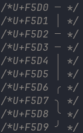
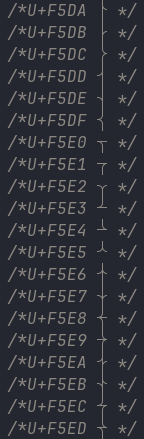
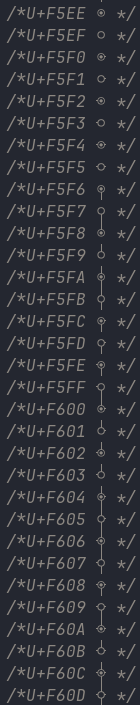

Configuring Contour#
Contour offers a wide range of configuration options that can be customized, including color scheme, shell, initial working directory, and more. The configuration options can be categorized into several groups:
- Global options: These settings determine the overall behavior of the terminal and apply to all profiles.
- Profiles: With profiles, you can configure the terminal more granularly and create multiple profiles that can be easily switched between.
- Color scheme: Contour allows you to define different color schemes for the terminal and choose which one to use for each of the profiles.
On Unix systems, the main configuration file is located at ~/.config/contour/contour.yml and is both read from and auto-generated there. On Windows systems, the file is located at %LocalAppData%\contour\contour.yml.
Please note that on Unix systems, the environment variable XDG_CONFIG_HOME (by default set to ~/.config) is taken into account.
By default, on Unix systems, Contour is executed with the following arguments contour config ~/.config/contour/contour.yml profile main. If the configuration file includes a default_profile variable, it will be used as the default profile. Otherwise, the first profile listed in the file will be the default one.
How to#
Load specific configuration file#
contour config /path/to/file/with/configuration.yml
Set profile for current session#
You can utilize the profile parameter with the contour command:
contour profile one_of_profiles
Global options#
Let's go through the different sections of the global configurations in the file:
defaults_edition#
option names the generation of built-in defaults the configuration file is written against, so a setting the file does not spell out keeps the value it had when the file was written. classic is the defaults of every release before the 2026 redesign, and is what a file without the key gets. native2026 is the redesign's: JetBrains Mono (Cascadia Mono on Windows) at 13pt on macOS and 12pt elsewhere, a 100x30 page with 8x6 margins, the contour-dark/contour-light color schemes, the status line without hard-coded colors, a silent bell, 10000 lines of scrollback, a steady block cursor, links decorated while the follow modifier (Command on macOS) is held, unfocused panes dimmed, a tab bar shown only for two or more tabs, a scrollbar that follows the system's scroll bar setting (scrollbar.mode: system, where classic always shows it), a hovered link's target shown only while the follow modifier is held (hyperlink_hover_tooltip: false), and GUI chrome that follows the terminal background (theme: terminal, where classic follows the OS). Under native2026 colors: default, the stock scheme left unmodified, also means the contour-dark/contour-light pair, so an existing configuration follows dark mode; naming any other scheme keeps it fixed. Under native2026 the default profile's contour-dark and contour-light palettes come from the built-in schemes: a color_schemes: entry of either name takes effect only when a profile names it in colors:. A freshly generated configuration states native2026. A settings.yml beside the file may set the key too, and wins.
platform_plugin#
option allows you to override the auto-detected platform plugin to be loaded. You can specify values like auto, xcb, cocoa, direct2d, or winrt to determine the platform plugin. The default value is auto.
renderer#
section contains configuration options related to the VT Renderer, which is responsible for rendering the terminal onto the screen. It includes the backend option to specify the Qt RHI graphics API, with possible values of auto (the native backend per platform), OpenGL, vulkan, direct3d11, direct3d12, metal, or software. The other options in this section control the tile mapping and caching for performance optimization.
ssh_default_term#
Default terminal type for built-in SSH profiles. A profile's TERM takes precedence.
word_delimiters#
option defines the delimiters to be used when selecting words in the terminal. It is a string of characters that act as delimiters.
extended_word_delimiters#
option defines the delimiters to be used when selecting words in the second time. It is a string of characters that act as delimiters. By default word delimiters are used.
command_palette_recent_count#
option sets how many recently used commands the command palette pins above its alphabetical list. The palette is opened with the OpenCommandPalette action (bound to Ctrl+Shift+P by default), and the list of recent commands is remembered across restarts in the command-history.yml file beside your configuration file. Set it to 0 to turn the "recently used" section off entirely. The default value is 5.
read_buffer_size#
option sets the most bytes taken from the PTY in one read, and so the most parsed in one go. Larger batches parse output faster; smaller ones show a flood of it in smaller steps. It is an advanced option and should be used with caution. The default value is 65536. A change applies to sessions opened afterwards.
pty_buffer_size#
option sets the size in bytes per PTY Buffer Object. It is an advanced option for internal storage and should be changed carefully. The default value is 1048576. A change applies to sessions opened afterwards.
default_profile#
option determines the default profile to use in the terminal.
early_exit_threshold#
option determines the early threshold time. If the shell ends earlier than the specified threshold without a successful exit status, its pane stays open with the shell's last output and a footer naming how it ended (its exit code or signal): Return restarts the shell in the same pane, and the ClosePane binding (Ctrl+Shift+W, or Command+W on macOS, by default) closes it. A shell that exits successfully -- exit or Ctrl+D -- closes the pane at once.
spawn_new_process#
flag determines whether a new process should be spawned when creating a new terminal. The default value is false.
reflow_on_resize#
option controls whether or not the lines in the terminal should be reflowed when a resize event occurs. The default value is true. A change applies to sessions opened afterwards.
snap_to_rows#
option aligns startup and manually resized window heights to complete terminal rows. The default is false. Applies to a single visible pane, including a zoomed split pane. Font metrics, window chrome and configured margins are taken into account. Windows snaps during resizing; macOS snaps when manual resizing ends; X11 uses window-manager size hints. Wayland has no resize-increment hint, so only startup sizing is supported there. Maximized and fullscreen sizes are unrestricted. Fractional scaling can leave less than one logical pixel of rounding slack. A change applies at the next startup or manual resize.
connect_picker_on_start#
option makes a plain launch, one with no command-line arguments such as a Dock, Spotlight or launcher start, show the Connect picker first: a small window asking whether the new window's sessions live in this computer's daemon, in this window only, or on a saved host. The default is false. contour connect shows the picker whatever this says, and a launch with arguments never does. Also the "Ask every time Contour starts" switch of the picker and of Settings.
remember_window_position#
option remembers the last normal window position and monitor, without saving window size. The default is true on Windows and false on other platforms. Enable it to opt in on macOS and X11; Wayland leaves placement to the compositor. The first window restores its location at startup. The window-position.yml side file stores monitor-relative x/y coordinates and a zero-based monitor index. Disabling the option stops reading and writing position state.
tab_switch_on_horizontal_wheel#
option controls whether a horizontal mouse wheel tilt (or a horizontal trackpad swipe) over the tab strip or the terminal switches to the previous/next tab. An application that has requested mouse reporting keeps receiving the horizontal wheel; holding the bypass modifier switches tabs anyway. An explicit WheelLeft/WheelRight entry in input_mapping takes precedence. The default value is true.
hyperlink_hover_tooltip#
Whether hovering a link (OSC 8 or detected) shows its target without holding the follow modifier. While the modifier is held the target always shows. A local file:// target is shown as a plain path. Defaults to false; a configuration written before the 2026 defaults keeps true.
progress_show_delay#
How long running or busy OSC 9;4 progress waits before appearing on tabs and desktop indicators, in milliseconds. The default is 500. Set it to 0 to show progress immediately. Paused and error states always appear immediately.
progress_timeout#
How long an application's progress indicator (OSC 9;4) stays on screen without being updated, in milliseconds.
0 (the default) disables expiry entirely: the indicator persists until the application clears it with state 0, which is what the sequence specifies and what ConEmu and Windows Terminal do. The terminal cannot tell a long-running operation from an application that died holding one, so a non-zero value trades that fidelity for a guard against a bar left stranded on screen. Applications using the protocol are expected to refresh it about once a second, so a timeout well above that -- 15000 or so -- is the useful range.
notification_close_timeout#
How long after showing a desktop notification that asked to hear of its close (c=1) the terminal waits before assuming the desktop closed it, in milliseconds.
This only applies where a close cannot be observed. Contour normally learns that a notification was dismissed or expired from the desktop itself and reports it back to the application as the OSC 99 p=close event. Inside a Flatpak sandbox that is impossible: the only reachable service is the org.freedesktop.portal.Notification portal, which has no close signal of any kind, so an application that asked for close events (c=1) would otherwise wait forever.
A notification that states its own lifetime through w= is answered after that instead -- the application already said what it wanted. Only w=-1, "whatever the desktop does", falls back to this value.
Two cases are deliberately never answered, because there is no moment at which an answer would be true: 0 here, which disables the assumption outright, and w=0 on the notification, which asks for a popup that never expires on its own. An application that requested close events in either case is not told.
A notification that asked for no close event -- a command's finish notice among them -- is never assumed closed: assuming it would only make it impossible to withdraw, and its click, from the desktop's notification history, would go unanswered.
Read once per terminal session, so a changed value reaches sessions opened after the reload.
Because the report is a timer rather than an observation, it is marked untracked on the wire, so an application can tell the two apart.
accessibility_announcements#
Whether events with no representation in the accessibility tree -- the bell, a desktop notification, a mode change -- are announced to assistive technology. Costs nothing while no assistive client is attached. See Accessibility.
accessibility_caret_reporting#
Whether the terminal reports where the caret is to assistive technology, which is how a screen magnifier follows what you are typing. Costs nothing while no assistive client is attached. Turn it off to rule the caret reports out when diagnosing input latency. See Accessibility.
tab_bar_position#
Selects where the GUI tab strip (tab bar) is placed within the window. Valid values (ignore-case):
Top— the tab strip is drawn above the terminal content. This is the default.Bottom— the tab strip is drawn below the terminal content.
tab_bar_visibility#
Selects when the GUI tab strip (tab bar) is shown. Valid values (ignore-case):
Always— the tab strip is always shown. This is theclassicdefault.Never— the tab strip is never shown.Multiple— the tab strip is shown only when the window has more than one tab, and hidden while a single tab remains. This is thenative2026default.
tab_placement#
Selects where the window's tabs live. Valid values (ignore-case):
Top— the tabs are in the tab strip, at the edgetab_bar_positionnames. This is theclassicdefault.Sidebar— the tabs are rows of the workspace sidebar, under their workspace, and the tab strip gives way to a breadcrumb. This is thenative2026default.
sidebar#
configuration controls the workspace sidebar: the list of workspaces, and with tab_placement Sidebar their tabs, at the window's left edge.
visible: Whether the sidebar starts shown. This isfalsefor theclassicdefaults andtruefor thenative2026ones. What you last chose in a window is remembered, and wins over this.width: The sidebar's starting width in logical pixels, or in cells underui_style: terminal, kept within the bounds of the chrome style; a width dragged in a window is remembered likewise. Omit it or usenullfor the style's own width.tab_color: How a coloured tab shows its colour on its sidebar rows (ignore-case). An uncoloured tab looks the same in all three.tint(default): the row is filled with the colour, faded as the tab strip fades it.bar: a narrow bar in the colour at the row's leading edge, the row's full height.name: the tab's name is drawn in the colour.
workspace_color: How a coloured workspace shows its colour in the sidebar (ignore-case). An uncoloured workspace looks the same in all three.tint(default): the workspace's row is filled with the colour, faded as the tab strip fades it.group: a rail in the colour down the leading edge of the workspace's row and every row beneath it, over a faint wash.swatch: a small square in the colour before the workspace's name.
row_spacing: How much room a tab's or a pane's two-line row takes (ignore-case). A workspace's one-line row and the rows underui_style: terminal, two cells tall, are the same in both.comfortable(default): taller rows, the extra room going between the rows, so each row's two lines read as one.compact: tighter rows, so more of them fit.
tab_color, workspace_color and row_spacing are read when a window opens: a window that is open when the configuration is reloaded keeps the styles it opened with, and a window opened after it uses the new ones.
tab_style#
section changes how the tabs are drawn, on top of the chrome's own look. Every key defaults to the chrome's own, and a change is applied live.
tab_style:
preset: none
shape: auto
spacing: 0
material: auto
active_fill: auto
inactive_fill: auto
bar_fill: auto
active_indicator: none
indicator_color: accent
tab_color_mode: fill
close_button: auto
new_tab_button: shown
tab_width: auto
min_tab_width: 0
max_tab_width: 0
preset: A named look that sets several of the keys below at once:none(the default),classic(square tabs edge to edge on an opaque bar),minimal(no fills; the active tab is the one underlined),rounded(floating pills with a little room between them),glass(floating pills on a see-through bar, the active one a faint wash) oroutlined(floating outlines, an accent line under the active one). A key set to anything but its default wins over the preset, so a preset is a starting point to adjust.shape: How each tab is drawn:auto(the interface style's own tab),pill(a rounded tab that floats on the bar, the active one filled),flat(a square tab, the active one filled),underline(no fill; the active tab is the one with the line under it) oroutlined(a rounded tab that floats on the bar, the active one outlined). The bar itself stays where the interface style puts it. Has no effect underui_style: terminal, whose tabs are character cells.spacing: The gap between two tabs, in pixels, from0(they touch) to32. With a gap, no line is drawn between tabs. The pills of macOS and Linux keep their own gap.material: What the tab bar is made of:auto(the interface style's own),solid(opaque),frosted(mostly opaque, softly coloured by what is behind the window) orglass(clearly see-through: a blurred view of what is behind the window). The names are the same on every system, and each draws them with its own material: Windows drawsfrostedas Mica andglassas Acrylic. macOS drawsfrostedas its own title-bar material andglassas Liquid Glass on each tab, following Apple's guidance to keep glass on the controls rather than across the bar (macOS 26; earlier versions keep the solid bar). KDE Plasma draws both over KWin's blur, under a translucent tint. A desktop without such a blur (GNOME, any X11 window manager but KWin) keeps the bar as the interface style draws it, as does any system with transparency effects turned off. A translucentactive_fillorinactive_filllets the material show through the tabs.active_fill: The active tab's fill:auto,accent(the accent colour),subtle(a faint wash that keeps the bar's tone) or a colour such as'#3B82F6'. A colour given to a tab itself wins over it.inactive_fill: The fill of every other tab, spelled the same way.bar_fill: The bar's own fill, spelled the same way. Over afrostedorglassmaterial a colour is a tint the material shows through. The labels and buttons on the bar (tab titles, the new-tab button, the window buttons) are inked for the bar's colour, so a dark bar on a light theme stays readable.active_indicator: A line on the active tab:none,underline(along its bottom edge) ortop-line(along its top edge).indicator_color: That line's colour:accent(the system accent colour) or a colour such as'#3B82F6'.tab_color_mode: How a tab shows a colour of its own, whether from a profile'stab_coloror picked for the tab:fill(the colour is the tab's fill, faded while the tab is inactive; this is the default and replacesactive_fillandinactive_fillon that tab),tint(a wash of the colour over the tab as it is otherwise styled) orindicator(the tab keeps its styled fill and the colour is its indicator line, in place ofindicator_color; such a tab shows the line whether or not it is active).close_button: When a tab shows its close button:auto(the interface style's own: on every tab of a flat strip, on the active or hovered tab otherwise),hover(only on the tab under the pointer),active(on the active tab and under the pointer),alwaysornever(a tab then closes with a middle click, its menu or the keyboard, and keeps no room for it).new_tab_button:shown(where the interface style puts it: after the tabs on Windows, in the toolbar on macOS, in the header bar on Linux) orhidden(a tab then opens from the keyboard, the menus or the command palette).tab_width: How wide the tabs are:auto(the interface style's own: equal pills on macOS and Linux, each tab as wide as its title on Windows),equal(every tab as wide as the others, sharing the bar and shrinking together as tabs are added, down tomin_tab_width; past that the strip scrolls) orfit(each tab as wide as its title, within the two limits). The pills of macOS and Linux are always equal. Has no effect underui_style: terminal.min_tab_width: The narrowest a tab gets, in pixels, up to1000;0keeps the interface style's own.max_tab_width: The widest a tab gets, in pixels, up to1000;0keeps the interface style's own. A maximum under the minimum is taken as the minimum.
gui_config_locked#
flag, when true, opens the in-app settings page read-only and prevents the GUI from writing any of its side files (profiles/, colorschemes/, settings.yml), so this hand-maintained configuration file stays the single source of truth. The default value is false.
theme#
option selects the light/dark appearance of the GUI chrome (title bar, tab strip, command palette, settings pages, dialogs) independently of the operating system. Possible values are terminal (follow the terminal's background), system (follow the OS color scheme), dark, and light. The terminal grid keeps following the OS light/dark preference through its own color scheme. The default value is terminal under defaults_edition: native2026 and system under classic.
ui_style#
Selects how the application's own chrome is painted: the tab strip and title bar, and the controls (buttons, fields, menu entries, combo boxes) inside menus, popups and the settings page. This selects a shape, not a color: both styles take their colors from the operating system palette and follow the theme setting. Valid values (ignore-case):
native— platform-native GUI chrome. This is the default.terminal— the chrome is quantized to whole character cells of a monospace font and its corners are squared off, so the window reads as one continuous TUI rather than as a GUI wrapped around a terminal. Tabs keep every GUI affordance (drag to reorder, tear off, rename, close, context menu); only their appearance changes.
This is the recommended way to get the terminal look now that a window can hold split panes: the indicator status line's {Tabs} item still works, but it is drawn per pane, so a split window would show one tab list per pane instead of one per window.
The Qt Quick Controls half of the style is selected once, before the first control is created, so a change takes effect on the next start rather than live.
window_control_style#
Selects how the window's own minimize/maximize/close controls are drawn, and which side of the tab bar they sit on. These are drawn only while the native title bar is hidden (show_title_bar is false, the default), which is when the tab bar doubles as the title bar; with the native frame shown, the operating system draws them itself. Valid values (ignore-case):
auto— match the host: macOS getsmacos, Windows getswindows, and anything else (KDE Plasma included) getslinux. This is the default.windows— trailing (right) edge, flush rectangular buttons in minimize/maximize/close order, with a red close hover.macos— leading (left) edge, traffic lights in close/minimize/zoom order. The dots reveal their glyphs while the group is hovered and grey out while the window is inactive.plasma— trailing (right) edge, likewindowsbut with the circular hover fills of KDE Plasma's Breeze decoration.linux— round buttons with the desktop's themed icons, in the order and on the side (or sides) the desktop's own button layout names: GNOME'sbutton-layout, KWin'sButtonsOnLeftandButtonsOnRight, or GTK'sgtk-decoration-layout. Where none is set, minimize, maximize and close sit at the trailing (right) edge.
Independent of ui_style: every value works in both the native and the terminal chrome, and takes its extents from whichever of those is active — so under ui_style: terminal the controls stay quantized to whole character cells, and the traffic lights are drawn as coloured cell-wide dots.
Unlike ui_style, this applies immediately when changed from the settings page.
chrome_density#
Selects how much room the window chrome takes. Valid values (ignore-case):
comfortable— once a tab is split, its panes are cards with a header each and a 6 pt gap between them. This is the default.minimal— panes are separated by 1 pt lines and carry no header; hold Alt (Option on macOS) for half a second to show the headers. On macOS a tab that is not split gets a bare 28 pt band.
A change is applied live.
secure_input#
Shows a lock while the program in a pane hides what you type (a password prompt) and, on macOS, turns on Secure Keyboard Entry while that pane has focus. auto or off.
ui_font_family#
Font family the terminal-style chrome is drawn with. When empty (the default) the chrome inherits the regular font family of the profile the window is running (-p/--profile, else default_profile), which is what makes it match the terminal grid below it. Ignored while ui_style is native, where the chrome uses the platform UI font. Takes effect on the next start.
ui_font_size#
Font size, in points, the terminal-style chrome is drawn with. When 0 (the default) the chrome inherits the font size of the profile the window is running. Ignored while ui_style is native. Takes effect on the next start.
grapheme_clustering#
Whether DEC mode 2027 starts out set. While set, a late codepoint may widen its grapheme cluster -- U+FE0F widens a cluster to two columns -- but a cluster never narrows again. While unset, a cell is measured by plain wcwidth() with no clustering. Applications may still toggle the mode at runtime. A change applies to sessions opened afterwards.
text_scaling_method#
How a glyph is enlarged for scaled text (kitty text sizing protocol, OSC 66). stretch magnifies the ordinary-size glyph: free to rasterize, no extra atlas entries, but softer at large scales. rerasterize asks the font for the glyph at the larger size: crisp at any scale, at the cost of a rasterization and an atlas entry per glyph and scale.
bypass_mouse_protocol_modifier#
option specifies the keyboard modifier (e.g., Shift) that can be used to bypass the terminal's mouse protocol and select screen content.
mouse_block_selection_modifier#
option determines the modifier (e.g., Control) that needs to be pressed to initiate block selection using the left mouse button.
on_mouse_select#
option selects the action to perform when a text selection has been made. Possible values include None, CopyToClipboard, and CopyToSelectionClipboard.
live_config#
option determines whether the instance should reload the configuration files whenever they change. The default value is false.
experimental#
images#
section contains configuration options related to inline images. It includes options like sixel_scrolling, sixel_register_count, and good_image_protocol to control various aspects of image rendering, and kitty_file_transmission and kitty_file_allow_list to control which files the kitty graphics protocol may read (see the kitty graphics page). The maximum image size is derived from the screen size; max_width and max_height are deprecated and ignored.
daemon#
section decides whether sessions are hosted by a daemon process, so they outlive the window.
daemon:
mode: auto
socket: ""
size_policy: latest
default_cell_pixel_size: { width: 10, height: 20 }
history_limit: 1000
restore:
scrollback: true
scrollback_lines: 1000
rerun_programs: []
interval: 30
keeper:
restart_hung: true
give_up_crashes: 5
give_up_window: 300
backoff_start: 1
backoff_cap: 30
startup_timeout: 30
stop_timeout: 60
mode:in_processkeeps sessions in the GUI process,autouses a daemon and falls back to in-process with a notice,requiredfails when no daemon can be reached.socket: The daemon's socket path; empty selects the default.size_policy: Which client's size wins when several are attached:latest,smallestorlargest.default_cell_pixel_size: The cell size in pixels images are laid out on before any client has reported one; 10×20 is the VT340's text cell.history_limit: Scrollback lines per session,-1for unlimited; unset uses the hosting profile'shistory.limit.restore.scrollback: Whether a restored pane gets its scrollback back; the snapshot file may hold secrets that were on screen, and is readable by your user only.restore.scrollback_lines: The most scrollback lines kept per pane, from0to100000; the live scrollback stayshistory_limit.restore.rerun_programs: Programs a restored pane runs again when it was running one of them, such as[vim, htop]; nothing is re-run unless listed.restore.interval: How often, in seconds, a changed workspace is written; at least5.keeper.restart_hung: Whether the PTY keeper, the processcontour daemonruns the daemon behind, restarts a daemon that stops answering for 30 seconds.keeper.give_up_crashesandkeeper.give_up_window: A daemon that crashes this many times within this many seconds is not restarted at once again: the keeper waits two minutes, then tries once more, and ends with the shells if that one crashes too.keeper.backoff_startandkeeper.backoff_cap: How many seconds the restart after a crash soon after another waits, doubling from the first up to the second.keeper.startup_timeout: How many seconds a starting daemon may be silent before it serves, or is killed as hung: until its first heartbeat, and between heartbeats after it.keeper.stop_timeout: How many seconds a stopping daemon has to end before the keeper kills it; keep it below a service manager's own stop timeout (systemd: 90).
quick_terminal#
section sets a global hotkey that slides a terminal down from the top of the screen under the pointer, full width and 40 % of its height, in Minimal density.
hotkey: The chord, spelled as an input mapping spells it; it needs at least one ofControl,AltandSuper. Unbound (~) by default.hide_on_focus_loss: Whether the quick terminal hides when it loses the focus.
folding#
configuration controls output folding: collapsing a finished command's output down to the prompt line it was entered at, and expanding it again.
folding:
enabled: true
show_markers: true
auto_collapse_on_new_command: false
on_jump_into_fold: expand
enabled: Whether folding is available at all. When false the actions below do nothing and no fold markers are drawn.show_markers: Whether the gutter's block column, left of the grid, draws fold markers: a boxed minus on a foldable prompt line whose output is showing, a boxed plus once it is collapsed, and a bar down the side of the block joining the two. Clicking anywhere on that column toggles the fold. Note that the column costs one column of terminal width; it is reserved while this,gutter.exit_statusorgutter.user_marksis on.auto_collapse_on_new_command: Whether a command's output is collapsed automatically as soon as the next prompt appears, so that only the command you are running now is shown in full.on_jump_into_fold: What a Vi-mode jump that targets a line inside a collapsed block does:expandopens the block so the cursor lands on what it was aiming at,skipleaves it collapsed and stops at its prompt line instead. Plain motions (j,k,{,}, ++ctrl+d++, ++ctrl+u++) always step over a collapsed block regardless of this setting.
The actions CollapseAllFolds, ExpandAllFolds, CollapseLastFold, ToggleLastFold and ToggleFold can be bound to keys; ScrollMarkUp and ScrollMarkDown already move the viewport from one prompt to the next.
gutter#
configuration controls the gutter: the strip left of the grid that carries per-line timestamps, line numbers and the block column.
gutter:
exit_status: true
user_marks: true
block_column_width: 2
rail_thickness: null
bold_on_hover: true
line_numbers: off
line_number_width: 6
timestamps: false
timestamp_format: '%H:%M:%S'
folding.show_markers), exit status or user marks are on, block_column_width cells wide.
exit_status: Colour each command's fold controls by how it ended -- the colour scheme'sblock_statuscolours -- draw a triangle beside a running command, and a dot beside a finished one that shows no fold control: one with nothing to fold, or any one while fold markers are off. Hovering the block column shows the exit code, duration, start time, working directory and command line.user_marks: Draw a diamond beside every row marked with vi-modemm.block_column_width: The block column's width in cells, 1 or 2. At 2, the default, its fold controls and marks are drawn across both cells at twice the size, and a click anywhere in the column -- the blank strip left of it included -- lands on it.rail_thickness: Native command-block rail thickness in UI points, 0 to hide the line or 1 to 8. Omit or use null for the style default. Takes effect for new sessions.bold_on_hover: Draw the fold under the pointer -- its line, its box and its end -- one stroke heavier, as well as at full strength: a failed command's, already heavy, heavier still. Its colours are the color scheme'sfold_marker.hoverandblock_status_hover.line_numbers:off,absolute(every row's number, counted from the session's first row, so the numbers stay put while history scrolls away),relative(every row's distance from the cursor row, counting a collapsed block as one row -- exactly whatjandkcount) orhybrid(the cursor row's own number, every other row's distance), as vim'snuandrnu. In vi mode the distance counts from the vi cursor.line_number_width: Columns the line numbers take, 3 to 10. A longer number shows its last digits after an ellipsis.timestamps: Show the time each row was first reached. A row shows it only where it differs from the row above, so a long output does not repeat one second.timestamp_format: Astd::formatchrono specification in local time, such as%H:%Mor%a %H:%M:%S. It must begin with a%conversion, so a leading literal such as[%H:%M]is refused, and so is a leading width or alignment such as8%Hor>%H, whichstd::formatwould pad the timestamp with. Every character it spells must take exactly one column, so a double-width character (a CJK ideograph, say) or a combining mark is refused as well. A format that cannot be drawn is reported when the configuration loads, and the default is kept.
In vi normal mode, za, zo, zc, zM and zR toggle, open and close the block under the cursor, and close or open all of them, as in vim.
osc_context#
configuration controls whether Contour reads OSC 3008, systemd's hierarchical context signalling (UAPI.15): the nested stack of contexts a shell, run0, ssh or a container runtime opens around whatever runs inside it.
osc_context:
enabled: true
max_depth: 16
max_retained_contexts: 256
derive_markers: when_alone
tinting: boundaries
enabled: Whether the sequences are read at all. When false nothing is tracked, nothing is derived and nothing is tinted.max_depth: How deep the context stack may grow. Beyond it, further contexts are ignored -- the NEWER ones, so that a program cannot push the context established above it out of the stack.max_retained_contexts: How many contexts are remembered for scrolled-back output that still refers to them. Older ones are forgotten, and output belonging to them simply stops being attributed.derive_markers: Whether OSC 3008 may stand in for a shell integration that is not installed.when_alonederives prompt and command marks from it only while OSC 133 has said nothing; once a shell integration speaks, it owns the marks for the rest of the session.neverleaves marks entirely to OSC 133.tinting: Which contexts may tint the page background. The colours themselves come from the colour scheme'stint:map, which no shipped scheme sets, so nothing is tinted until you choose a colour there. Note that a context is something the session announced: anything that can write to your terminal can announce one, or fail to announce one, so the absence of a tint is not a statement that nothing is elevated.
command_blocks#
configuration controls what the terminal remembers about each shell command it saw run.
command_blocks:
max_records: 1000
pager: less -R
pager_format: sgr
show_in_context_menu: true
compact_context_menu: false
show_in_context_menu to false to omit the clicked command's details and actions from the pane's context menu. The rail's block menu is still available.
Set compact_context_menu to true to group the command's details and actions under Command Block.
A command block is one prompt and the output of the command run at it, delimited by the OSC 133 marks a shell with shell integration emits -- or, without one, by systemd's OSC 3008 contexts. For each block the terminal keeps its command line, exit status, duration, start time and working directory, even after the block's rows have left the scrollback.
max_records: How many blocks one session remembers; the oldest are forgotten first. At least 1, at most 1000000. A change applies to sessions opened afterwards.pager: The program the OpenCommandOutput action ("Open Output in Pager", Ctrl+Shift+G) opens a command's output with when its binding names none. It is read as a profile'sshell:is: a string naming a program runs as it is; otherwise its first word is the program and the rest its arguments -- on Windows passed on as written, soC:\Tools\less.exe -Rneeds no quoting. A binding's ownprogram:is read the same way. The output is written to a private file that is appended as the last argument and deleted when the pane closes. Defaults toless -R(moreon Windows).pager_format: Whether the pager renders colours:sgrwrites the output with its SGR sequences,plainas text only. Defaults tosgr, which bothless -Rand Windowsmore(inside the terminal's pseudo console) render. A binding's ownformat:wins, and a binding that names its ownprogram:getssgr.
default_layout#
Name of the layout to open at startup, instead of a single default tab.
hosts#
Saved remote hosts that "Attach to Host" lists.
git_drawings#
Contour implements rendering of git branch characters used by e.g. vim-flog and gitgraph.nvim. Initially introduced to kitty, the symbol set was later expanded to support more commit options.
The symbols use codepoints U+F5D0 ... U+F60D.
Note: U+F5D2 ... U+F5D5 are supposed to be fading out symbols but currently are rendered as simple lines.



The symbols may be customized via config options:
branch_stylecontrols the style of connecting branches. May be one ofnone,thin,thick,double. The default value isthin.arc_stylecontrols the style of arcs. May be one ofround,ellips.arc_stylehas effect only ifbranch_styleisthin. The default value isround.merge_commit_stylecontrols the style of merge commits. May be one ofsolid,bullet. The default value isbullet.
box_arc_style#
Controls how arcs in box drawing characters are drawn. May be one of round or ellips. The default value is round.
braille_style#
Controls how Unicode Braille characters are rendered. May be one of font, solid, circle, circle_empty, square, square_empty, aa_square, aa_square_empty. The default value is circle.
fontdisables special rendering and uses font characters.solidsplits the character box into 8 rectangles without space between them. No antialiasing is used, some font sizes may result in differently sized "dots".circle<..>and<..>square<..>groups use circle and square "dots" respectively.<..>_emptydraws non-filled "dots".square<..>does not use antialiasing, which may result in differently sized "dots".aa_square<..>uses antialiasing.
Default global parameters#
platform_plugin: auto
renderer:
backend: auto
tile_hashtable_slots: 4096
tile_cache_count: 4000
tile_direct_mapping: true
word_delimiters: " /\\()\"'-.,:;<>~!@#$%^&*+=[]{}~?|│"
read_buffer_size: 65536
pty_buffer_size: 1048576
default_profile: main
spawn_new_process: false
reflow_on_resize: true
bypass_mouse_protocol_modifier: Shift
mouse_block_selection_modifier: Control
on_mouse_select: CopyToSelectionClipboard
live_config: false
images:
sixel_scrolling: true
sixel_register_count: 4096
The default profile is automatically the top (first) defined profile in the configuration file, but can be explicitly set to an order-independent name using default_profile configuration key.
Profiles#
Profiles is the main part of user specific customizations, you can create more than one profile and chose which you want to use during startup or define in configuration file.
By default each profile inherites values from default_profile. This means that you can specify only values that you want to change in respect to default profile, for example you can create new profile to use bash as a shell preserving other configuration from main profile
For the full list of options see generated configuration file on your system or Profiles section of documentation.
Color Schemes#
In contour you can specify different colors inside terminal, for example text background and foreground, cursor properties, selection colors and plenty others. You can configure your color profiles, whereas a color can be expressed in standard web format, with a leading # followed by red/green/blue values, 7 characters in total. You may alternatively use 0x as prefix instead of #. For example 0x102030 is equal to '#102030'.
Syntax for color schemes repeat the one of profiles. First color scheme inside configuration file must be named default, each other color schemes inherit values from default color scheme. Example of configuration for color_schemes
color_schemes:
default:
# values for default color scheme
different_selection:
selection:
background: '#fff0f0'
For the full list of options see generated configuration file on your system or Colors section of documentation.